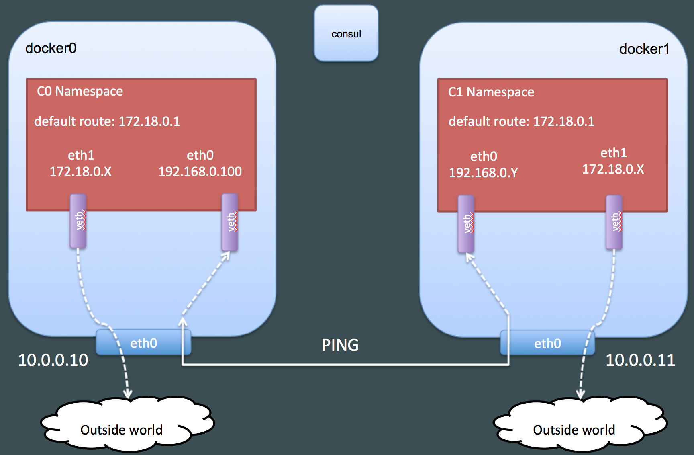
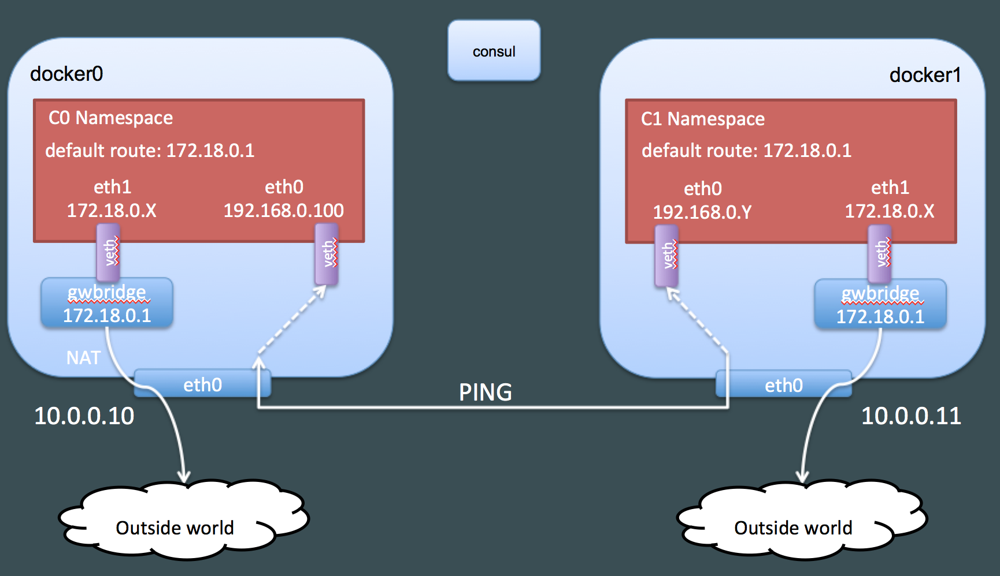
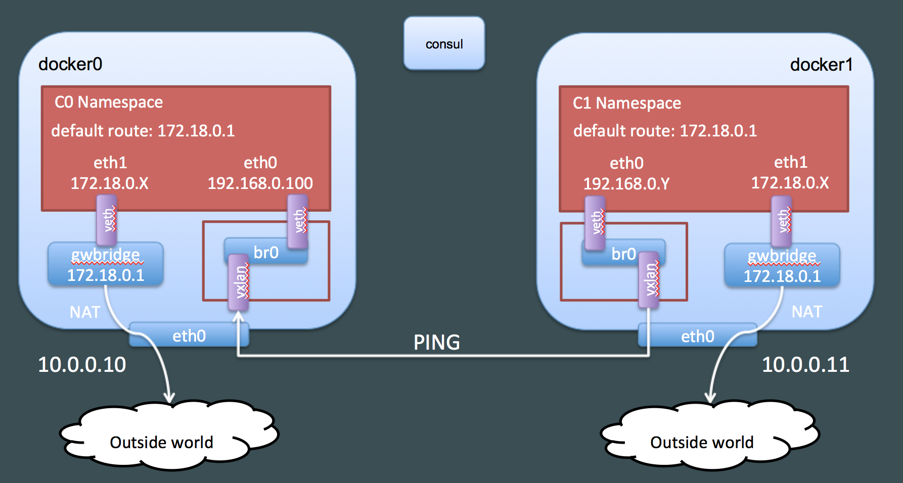

译者按： Laurent BERNAILLE 在他们公司的博客上写了三篇关于 Docker overlay network 工作机制的文章。本文因为有很高的专业度，所以一些英语表达，如 network overlay, linux network namespace, VxLAN 等并不翻译。
点击此处阅读原文 Laurent BERNAILLE, 现任 Cloud Native Services CTO, Laurent est en perpétuelle réflexion sur les alternatives offertes par le Cloud Public. Laurent 帮助他的客户采用最新的 best pratiques 以及最信的技术，帮助客户们更快对市场做出反应。 Il oriente ses clients vers une adoption en continu des meilleurs pratiques et des dernières technologies pour qu'ils gagnent en vélocité.
类似的优秀中文资料也有不少，例如：https://blog.51cto.com/jerry12356/2384159， 结合起来阅读，效果更佳。
介绍
在 D2SI(译者注：一家法国云服务创业公司), 我们自 Docker 诞生之初就一直在使用这个技术，并且一直在帮助众多项目迈入生产阶段。我们相信，使得一个项目步入生产阶段要求对项目使用的技术有很深入的理解，这样才有可能解决生产阶段中遇到的各种复杂的问题，分析遇到的异常行为抑或是解决性能下降。这就是为什么我们试着尽可能深入地去理解 Docker 使用的每个技术模块。
本文关注的问题是: Docker network overlay. Docker network overlay 驱动依赖以下技术：network namespace, VxLAN, Netlink 以及分布式键值存储系统(a distributed key-value store)。本文将逐一介绍上述机制以及他们对应的命令行工具。本来还将通过具体的操作展示， 当创建docker network overlay 以连接容器实例的时候，这些机制是如何彼此交互的。
本博文来源于我在在美国奥斯汀的 DockerCon2017 上做的报告。演示文稿可以通过点击链接下载。本系列博文使用的所有代码均可通过github下载。
Docker Overlay Networks
首先，我们想在3台 Docker主机之间构建一个 overlay network，其中两台运行 Docker, 另外一台运行 Consul。本例中，Docker 使用 Consul 存储 overlay networks 相关的，需要在各个Docker主机之间共享的元数据, 例如，容器的IP地址，MAC地址以及位置(位于哪台Docker主机上)。在早于 Docker 1.12 版本, Docker 需要使用外置键值存储系统，如 Etcd or Consul，来创建 overlay network 以及 Docker Swarms (如今，这种方式创建的 Docker swarms 通过被称为 “古典 Swarm”)。从 Docker 1.12版本之后, Docker 可以采用内置的键值存储系统来创建 Docker 集群以及 overlay networks (“Swarm 模式” 或者 “新 swarm”)。本文中，我们选用 Consul，因为该技术允许我们查看由 Docker 存入的键值，让我们更好地理解键值存储系统的作用。我们让 Consule 运行在一个单节点上。在实际中，我们一般会用至少包含3个节点的集群，以保证可靠性。
在本文的示例中, 我们用的主机采用IP地址如下:
- consul: 10.0.0.5
- docker0: 10.0.0.10
- docker1: 10.0.0.0.11
启动 Consul 与 Docker 服务
首先我们需要启动 Consul 服务器。我们只需要从网上下载Consul。我们只需要通过下面的命令行开启一个最简约的 Consul 服务。 1
$ consul agent -server -dev -ui -client 0.0.0.0
- server: 以服务器模式启动 consul agent
- dev: 创建一个没有任务持久化存储的单独的 Consul 服务器
- ui: 开启 WEB 页面，以便查看由 Docker 创建的键值对
- client 0.0.0.0: 为客户的访问绑定所有的网络接口。默认是只绑定
127.0.0.1
为了配置 Docker 引擎使用 Consul 作为键值存储系统，需要启动 docker 守护进程，并且指定cluster-store选项: 1
$ dockerd -H fd:// --cluster-store=consul://consul:8500 --cluster-advertise=eth0:2376
可选参数 cluster-advertise 指定采用哪个IP地址在集群中to advertise in the cluster for a docker host (这个可选参数并不是可有可无). 上述命令假定consul可以被客户(即其他Docker主机)解析为了具体IP地址。在本例中，解析为10.0.0.5。
此时如果我们查看 Consul 图形界面，我们可以看到 Docker 确实创建一些键，但是网络键: http://consul:8500/v1/kv/docker/network/v1.0/network/ 仍然是空的。
你们可以很容易地在AWS平台上，通过使用terraform脚本(通过Github下载)来创建同样的实验环境。一切默认配置(尤其是要使用的区域)定义在variables.tf. 你们需要给变量key_pair赋值，可以通过命令行terraform apply -var key_pair=demo或者通过修改文件variables.tf。
这三个实例都被配置上了userdata: consul and docker 都被安装了并且通过合适的参数启动。一条记录被添加进文件/etc/hosts，以便 consul 可以被解析成 consul server 的IP地址。当连接到 consul or docker 服务器, 你们应该使用公共IP地址 (given in terraform outputs) and connect with user “admin” (the terraform setup uses a debian AMI).
创建 Overlay
现在我们可以在两个Docker节点之间创建overlay网络: 1
2docker0:~$ docker network create --driver overlay --subnet 192.168.0.0/24 demonet
13fb802253b6f0a44e17e2b65505490e0c80527e1d78c4f5c74375aff4bf882a192.168.0.0/24作为overlay的子网前缀 (--subnet 这个参数是可选的，但是我们希望配备一个显著不同于主机所在的子网前缀，让我们分析变得更简单)。
我们现在验证下overlay是否正确地在配置在了两台Docker节点上: 1
2
3
4
5
6
7
8
9
10
11
12
13
14docker0:~$ docker network ls
NETWORK ID NAME DRIVER SCOPE
eb096cb816c0 bridge bridge local
13fb802253b6 demonet overlay global
d538d58b17e7 host host local
f2ee470bb968 none null local
docker1:~$ docker network ls
docker network ls
NETWORK ID NAME DRIVER SCOPE
eb7a05eba815 bridge bridge local
13fb802253b6 demonet overlay global
4346f6c422b2 host host local
5e8ac997ecfa none null localdemonet的网络。demonet在两台Docker节点上有同样的ID。
现在我们来确认下创建的overlay网络可以正常运行。我们在节点docker0创建一个容器C0，显式地分配IP地址192.168.0.100, 并使之连接在overlay网络上。在另一个节点docker1上我们创建另键一个容器, 连接到同一个overlay网络中，并且使之ping下C0. 1
2
3
4
5
6
7docker0:~$ docker run -d --ip 192.168.0.100 --net demonet --name C0 debian sleep 3600
docker1:~$ docker run -it --rm --net demonet debian bash
root@e37bf5e35f83:/# ping 192.168.0.100
PING 192.168.0.100 (192.168.0.100): 56 data bytes
64 bytes from 192.168.0.100: icmp_seq=0 ttl=64 time=0.618 ms
64 bytes from 192.168.0.100: icmp_seq=1 ttl=64 time=0.483 ms
- 如果
docker run后面追加-d=true或者-d，那么容器将会运行在后台模式。此时所有I/O数据只能通过网络资源或者共享卷组来进行交互。因为容器不再监听你执行docker run的这个终端命令行窗口。但你可以通过执行docker attach来重新附着到该容器的回话中。需要注意的是，容器运行在后台模式下，是不能使用--rm选项的。 - 如果要进行交互式操作（例如Shell脚本），那我们必须使用
-i -t参数同容器进行数据交互。 - 默认情况下，每个容器在退出时，它的文件系统也会保存下来，这样一方面调试会方便些，因为你可以通过查看日志等方式来确定最终状态。另外一方面，你也可以保存容器所产生的数据。但是当你仅仅需要短暂的运行一个容器，并且这些数据不需要保存，你可能就希望Docker能在容器结束时自动清理其所产生的数据。这个时候你就需要
--rm这个参数了。 注意：--rm和-d不能共用！
我们观察到，两个容器实例之间已经具备了连通性。如果我们试着从docker1(而不是一个容器实例)去ping容器C0, 是ping不同的，因为节点docker1并不清楚隔离在overlay中的子网192.168.0.0/24. 1
2
3
4docker1:~$ ping 192.168.0.100
PING 192.168.0.100 (192.168.0.100) 56(84) bytes of data.
^C--- 192.168.0.100 ping statistics ---
4 packets transmitted, 0 received, 100% packet loss, time 3024ms
工作原理
现在我们已经创建好了overlay网络。我们来看下docker overlay网络是如何工作的。
容器的网络配置
节点docker0上的容器C0的网络配置是怎样的？ 1
2
3
4
5
6
7
8
9
10
11
12
13docker0:~$ docker exec C0 ip addr show
1: lo: <LOOPBACK,UP,LOWER_UP> mtu 65536 qdisc noqueue state UNKNOWN group default
link/loopback 00:00:00:00:00:00 brd 00:00:00:00:00:00
inet 127.0.0.1/8 scope host lo
valid_lft forever preferred_lft forever
6: eth0: <BROADCAST,MULTICAST,UP,LOWER_UP> mtu 1450 qdisc noqueue state UP group default
link/ether 02:42:c0:a8:00:64 brd ff:ff:ff:ff:ff:ff
inet 192.168.0.100/24 scope global eth0
valid_lft forever preferred_lft forever
9: eth1: <BROADCAST,MULTICAST,UP,LOWER_UP> mtu 1500 qdisc noqueue state UP group default
link/ether 02:42:ac:12:00:02 brd ff:ff:ff:ff:ff:ff
inet 172.18.0.2/16 scope global eth1
valid_lft forever preferred_lft forever
- eth0: 配置了一个在子网192.168.0.0/24中的IP地址. 这个接口在overlay网络中(参加上图).
- eth1: 配置了一个在子网172.18.0.2/16中的IP地址, 我们之前从未配置过该接口。
那么C0的路由配置是怎样的？ 1
2
3
4docker0:~$ docker exec C0 ip route show
default via 172.18.0.1 dev eth1
172.18.0.0/16 dev eth1 proto kernel scope link src 172.18.0.2
192.168.0.0/24 dev eth0 proto kernel scope link src 192.168.0.100eth1. 这意味着，这个接口可以被用来访问overlay网络之外的资源。这一点可以通过ping一个外部IP地址来验证。 1
2
3
4$ docker exec -it C0 ping 8.8.8.8
PING 8.8.8.8 (8.8.8.8): 56 data bytes
64 bytes from 8.8.8.8: icmp_seq=0 ttl=51 time=0.957 ms
64 bytes from 8.8.8.8: icmp_seq=1 ttl=51 time=0.975 ms
注意：我们也可以通过使用可选参数--internal创建一个overlay网络。这样该网络中的容器就无法访问外部网络。
我们来看看是否可以获得更多的关于这些网络接口的信息。 1
2
3
4
5
6
7
8
9docker0:~$ docker exec C0 ip -details link show eth0
6: eth0: <BROADCAST,MULTICAST,UP,LOWER_UP> mtu 1450 qdisc noqueue state UP mode DEFAULT group default
link/ether 02:42:c0:a8:00:64 brd ff:ff:ff:ff:ff:ff promiscuity 0
veth
docker0:~$ docker exec C0 ip -details link show eth1
9: eth1: <BROADCAST,MULTICAST,UP,LOWER_UP> mtu 1500 qdisc noqueue state UP mode DEFAULT group default
link/ether 02:42:ac:12:00:02 brd ff:ff:ff:ff:ff:ff promiscuity 0
veth
两个网络接口的类型都是veth. veth类型的接口总是成对出现并通过一条虚拟的网线连接。这一对veth设备可以位于不同的network namespace，使得网络流量可以从一个namespace传递到另一个namespace. These two veth are used to get outside of the container network namespace.
Here is what we have found out so far:

现在我们需要找出来eth0还有eth1的对等网络接口。
What is the container connected to?
我们可以使用ethtool命令找到一个给定veth设备的另一端的对等设备。但是，ethtool这个命令在我们用的容器中并不可用。不过我们还是两种方式在容器中执行这个命令。第一个是用nsenter。nsenter允许我们进入一个或者多个和一个给定进程相关的命名空间。第二种方法是通过ip netns exec。这个命令依赖iproute在一个给定的network namespace执行命令。
Docker 不会在文件夹/var/run/netns中(ip netns查找network namespace的地方)创建符号链接。这就是为什么我们将依赖 nsenter (而不是ip netns)来查询由Docker创建的命名空间。
我们通过运行以下命令来列出来Docker创建的network namespace: 1
2
3docker0:~$ sudo ls -1 /var/run/docker/netns
e4b8ecb7ae7c
1-13fb802253inspect指定容器，并且从SandboxKey中提取出我们需要的信息来做到。 1
2
3docker0:~$ docker inspect C0 -f {{.NetworkSettings.SandboxKey}}
runnetns/e4b8ecb7ae7c
docker0:~$ C0netns=$(docker inspect C0 -f {{.NetworkSettings.SandboxKey}})
我们也可以在一个容器的network namespace中执行linux命令(即使容器没有这个命令): 1
2
3
4
5docker0:~$ sudo nsenter --net=$C0netns ip addr show eth0
6: eth0: <BROADCAST,MULTICAST,UP,LOWER_UP> mtu 1450 qdisc noqueue state UP group default
link/ether 02:42:c0:a8:00:64 brd ff:ff:ff:ff:ff:ff
inet 192.168.0.100/24 scope global eth0
valid_lft forever preferred_lft forevereth0还有eth1对等接口关联的网络接口的标识: 1
2
3
4
5
6docker0:~$ sudo nsenter --net=$C0netns ethtool -S eth0
NIC statistics:
peer_ifindex: 7
docker0:~$ sudo nsenter --net=$C0netns ethtool -S eth1
NIC statistics:
peer_ifindex: 10
我们现在再看看标识为7还有10网络接口。我们先在节点docker1上先查看一番: 1
2
3
4
5
6
7
8
9
10
11
12
13
14
15docker0:~$ ip -details link show
1: lo: <LOOPBACK,UP,LOWER_UP> mtu 65536 qdisc noqueue state UNKNOWN mode DEFAULT group default
link/loopback 00:00:00:00:00:00 brd 00:00:00:00:00:00 promiscuity 0
2: eth0: <BROADCAST,MULTICAST,UP,LOWER_UP> mtu 9001 qdisc pfifo_fast state UP mode DEFAULT group default qlen 1000
link/ether 06:e2:c0:20:ec:9f brd ff:ff:ff:ff:ff:ff promiscuity 0
3: docker0: <NO-CARRIER,BROADCAST,MULTICAST,UP> mtu 1500 qdisc noqueue state DOWN mode DEFAULT group default
link/ether 02:42:a7:17:99:39 brd ff:ff:ff:ff:ff:ff promiscuity 0
bridge
8: docker_gwbridge: <BROADCAST,MULTICAST,UP,LOWER_UP> mtu 1500 qdisc noqueue state UP mode DEFAULT group default
link/ether 02:42:be:d6:b0:c5 brd ff:ff:ff:ff:ff:ff promiscuity 0
bridge
10: vethbc521fc: <BROADCAST,MULTICAST,UP,LOWER_UP> mtu 1500 qdisc noqueue master docker_gwbridge state UP mode DEFAULT group default
link/ether 32:a1:47:1a:7f:1e brd ff:ff:ff:ff:ff:ff promiscuity 1
veth
bridge_slave7的接口的线索但是我们发现了标识为10的接口，也就是eth1的对等接口。另外, 10号接口被连接在一个名为docker_gwbridge的网桥上。 docker_gwbridge网桥是个什么东东呢? 如果我们列出来由docker管理的网络，我们可以看到docker_gwbridge是出现在列表中的: 1
2
3
4
5
6
7docker0:~$ docker network ls
NETWORK ID NAME DRIVER SCOPE
eb096cb816c0 bridge bridge local
13fb802253b6 demonet overlay global
f6823b311fd2 docker_gwbridge bridge local
d538d58b17e7 host host local
f2ee470bb968 none null local
现在我们来看网桥docker_gwbridge的元数据: 1
2
3
4
5
6
7
8
9
10
11
12
13
14
15
16
17
18docker0:~$ docker inspect docker_gwbridge
"Name": "docker_gwbridge",
"Driver": "bridge",
"IPAM": {
"Driver": "default",
"Options": null,
"Config": [
{
"Subnet": "172.18.0.0/16",
"Gateway": "172.18.0.1"
}
]
},
"Options": {
"com.docker.network.bridge.enable_icc": "false",
"com.docker.network.bridge.enable_ip_masquerade": "true",
"com.docker.network.bridge.name": "docker_gwbridge"
}
- this network uses the driver bridge (the same one used by the standard docker bridge, docker0)
ituses subnet 172.18.0.0/16, which is consistent with eth1enable_iccis set to false which means we cannot use this bridge for inter-container communicationenable_ip_masqueradeis set to true, which means the traffic from the container will be NATed to access external networks (which we saw earlier when we successfully pinged 8.8.8.8)
当从在docker0上的另一个也连接在domenet网络的容器去ping容器C0在eth1的IP地址 (172.18.0.2) 时，我们发现，容器间的通信是被禁止的。 1
2
3
4docker0:~$ docker run --rm -it --net demonet debian ping 172.18.0.2
PING 172.18.0.2 (172.18.0.2): 56 data bytes
^C--- 172.18.0.2 ping statistics ---
3 packets transmitted, 0 packets received, 100% packet loss
现在，我们又可以更新我们对Docker overlay网络的认知了: 
What about eth0, the interface connected to the overlay?
eth0对等的网络接口并不在节点docker0的host network namespace. 那么它一定唯一另一个命名空间中。如果我们看看docker0上存在的网络空间: 1
2
3docker0:~$ sudo ls -1 /var/run/docker/netns
e4b8ecb7ae7c
1-13fb8022531-13fb802253的命令空间。除了1-, 这个命名空间的名字正是我们overlay网络的网络ID的开始部分: 这个命名空间(1-13fb802253)很明显跟我们研究的overlay网络有关。让我们来看看这个命名空间拥有的网络接口： 1
2
3
4
5
6
7
8
9
10
11
12
13docker0:~$ overns=/var/run/docker/netns/1-13fb802253
docker0:~$ sudo nsenter --net=$overns ip -d link show
2: br0: <BROADCAST,MULTICAST,UP,LOWER_UP> mtu 1450 qdisc noqueue state UP mode DEFAULT group default
link/ether 3a:2d:44:c0:0e:aa brd ff:ff:ff:ff:ff:ff promiscuity 0
bridge
5: vxlan0: <BROADCAST,MULTICAST,UP,LOWER_UP> mtu 1450 qdisc noqueue master br0 state UNKNOWN mode DEFAULT group default
link/ether 4a:23:72:a3:fc:e3 brd ff:ff:ff:ff:ff:ff promiscuity 1
vxlan id 256 srcport 10240 65535 dstport 4789 proxy l2miss l3miss ageing 300
bridge_slave
7: veth2: <BROADCAST,MULTICAST,UP,LOWER_UP> mtu 1450 qdisc noqueue master br0 state UP mode DEFAULT group default
link/ether 3a:2d:44:c0:0e:aa brd ff:ff:ff:ff:ff:ff promiscuity 1
veth
bridge_slave
overlay网络所在network namespace包含三个接口(以及lo)：
- br0: 网桥
- veth2:
veth类型网络接口，容器C0中网卡eth0的对等接口，连接在bridge上。 - vxlan0:
vxlan类型网络接口，并且链接在网桥上。
vxlan网络接口明显overlay发挥其魔力的地方。我们将看看其实现细节，不过让我们先更新下拓扑图。 
结论
本段是本系列文章第一部分的总结. 在第二部分, 我们将关注VxLAN: 什么是VxLAN以及Docker是如何使用VXLAN的。